정보처리산업기사 (2015-05-31 기출문제)
1과목: 데이터 베이스
1. 시스템 카탈로그에 대한 설명으로 옳지 않은 것은?
- 데이터 사전이라고도 한다.
- 시스템 카탈로그에 저장되는 내용을 메타데이터라고 한다.
- 시스템 자신이 필요로 하는 스키마 및 여러 가지 객체에 관한 정보를 포함하고 있는 시스템 데이터베이스이다.
- 시스템 카탈로그의 정보를 INSERT, UPDATE, DELETE 문으로 직접 갱신할 수 있다.
(정답률: 78%)

2. 릴레이션 R의 속성 A, B, C 에 대해 R.A→R.B 이고 R.B→R.C 일 때 R.A→R.C 를 만족하는 관계를 무엇이라고 하는가?
- 완전 함수 종속
- 다치 종속
- 이행 함수 종속
- 조인 종속
(정답률: 73%)
3. 스키마의 3계층에서 실제 데이터베이스가 기억장치 내에 저장되어 있으므로 저장스키마(storage schema)라고도 하는 것은?
- 개념 스키마
- 외부 스키마
- 내부 스키마
- 관계 스키마
(정답률: 77%)
4. 데이터베이스의 정의로 옳지 않은 것은?
- 동일 데이터의 중복성을 최소화해야 한다.
- 컴퓨터가 접근할 수 있는 저장매체에 저장된 자료이다.
- 조직의 존재목적이나 유용성 면에서 존재가치가 확실한 필수적 데이터이다.
- 정보 소유 및 응용에 있어 지역적으로 유지되어야 한다.
(정답률: 77%)
5. 다음은 무엇에 대한 설명인가?
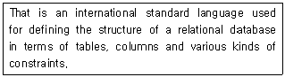
- TUPLE
- SQL
- DOMAIN
- DBMS
(정답률: 65%)
6. 학생 테이블에서 학번이 “1144077”인 학생의 학년을 “2”로 수정하기 위한 SQL 질의어는?
- UPDATE 학년=“2” FROM 학생 WHERE 학번=“1144077”;
- UPDATE 학생 SET 학년=“2” WHERE 학번=“1144077”;
- UPDATE FROM 학생 SET 학년=“2” WHERE 학번=“1144077”;
- UPDATE 학년=“2” SET 학생 WHEN 학번=“1144077”;
(정답률: 71%)
7. 선형구조에 해당하지 않는 것은?
- Tree
- Queue
- Stack
- Array
(정답률: 80%)
8. 자료구조의 특성을 고려할 때 다음 중 큐의 응용 분야로 가장 적합한 작업은?
- 수식 계산
- 운영체제의 작업 스케줄링
- 인터럽트 처리
- 함수 호출
(정답률: 68%)
9. 개체-관계(E-R) 모델에 대한 설명으로 옳지 않은 것은?
- E-R 다이어그램은 개체 타입을 사각형, 관계타입을 타원, 속성을 마름모로 표현한다.
- 현실 세계의 무질서한 데이터를 개념적인 논리 데이터로 표현하기 위한 방법으로 사용된다.
- 1:1, 1:N, N:M 등의 관계유형을 제한 없이 나타낼 수 있다.
- E-R 모델의 기본적인 아이디어를 시각적으로 가장 잘 나타낸 것이 E-R 다이어그램이다.
(정답률: 70%)
10. 다음 자료에 대하여 선택(Selection) 정렬을 사용하여 오름차순으로 정렬하고자 할 경우 1회전 후의 결과로 옳은 것은?
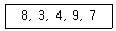
- 3, 4, 8, 7, 9
- 3, 8, 4 ,9, 7
- 3, 4, 9, 7, 8
- 7, 9, 4, 3, 8
(정답률: 69%)
11. A, B, C, D의 순서로 정해진 입력 자료를 스택에 입력하였다가 출력한 결과가 될 수 없는 것은?(단, 왼쪽부터 먼저 출력된 순서이다.)
- A, D, C, B
- A, B, C, D
- D, C, B, A
- B, D, A, C
(정답률: 72%)
12. 관계해석에 관한 설명으로 옳은 내용 모두를 나열한 것은?
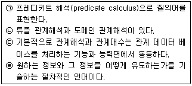
- (ㄱ), (ㄹ)
- (ㄴ), (ㄷ), (ㄹ)
- (ㄹ)
- (ㄱ), (ㄴ), (ㄷ)
(정답률: 67%)
13. 트랜잭션의 특성에 해당하지 않는 것은?
- CONTROL
- DURABILITY
- ATOMICITY
- ISOLATION
(정답률: 63%)
14. 정규화를 거치지 않으면 릴레이션 조작시 데이터 중복에 따른 예기치 못한 곤란한 현상이 발생할 수 있다. 이러한 이상(Anomaly) 현상의 종류에 해당하지 않는 것은?
- 삭제 이상
- 삽입 이상
- 갱신 이상
- 조회 이상
(정답률: 67%)
15. 다음의 전위(prefix) 표기식을 중위(infix) 표기식으로 옳게 변환한 것은?
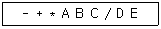
- B * D + A - E / C
- C * D + B - A / E
- E * D + C - B / A
- A * B + C - D / E
(정답률: 80%)
16. 다음 영문의 ( ) 내용으로 공통 적용될 수 있는 것은?
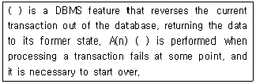
- Commit
- Integrity
- Rollback
- Call
(정답률: 73%)
17. 릴레이션에 관한 설명 중 옳은 내용 모두를 나열한 것은?
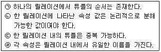
- ㄱ
- ㄹ
- ㄴ, ㄷ
- ㄴ, ㄷ, ㄹ
(정답률: 65%)
18. 데이터 모델을 다음과 같이 정의할 때 “C” 가 의미하는 것은?
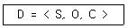
- CONSISTENCY
- CONSTRAINT
- CONTROL
- CONDITION
(정답률: 52%)
19. 다음 그림에서 트리의 차수는?
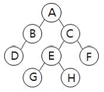
- 1
- 2
- 3
- 8
(정답률: 75%)
20. 데이터베이스 설계 순서를 바르게 나열한 것은?
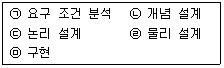
- (ㄴ)→(ㄷ)→(ㄱ)→(ㄹ)→(ㅁ)
- (ㄷ)→(ㄱ)→(ㄹ)→(ㄴ)→(ㅁ)
- (ㄹ)→(ㄱ)→(ㄴ)→(ㄷ)→(ㅁ)
- (ㄱ)→(ㄴ)→(ㄷ)→(ㄹ)→(ㅁ)
(정답률: 82%)
2과목: 전자 계산기 구조
21. 16진수 7C.D를 8진수로 변환하면?
- 174.61
- 174.64
- 176.61
- 176.64
(정답률: 58%)
22. 마이크로프로그램에 대한 설명으로 옳지 않은 것은?
- 마이크로프로그램은 소프트웨어적인 요소보다 하드웨어적인 요소가 많아 펌웨어(firmware)라고도 불린다.
- 제어기를 구성하는 방법으로 마이크로프로그램이 이용될 수 있다.
- 마이크로프로그램은 컴퓨터시스템의 제작단계에서 하드디스크 내부에 저장한다.
- 마이크로프로그램은 마이크로명령어들로 구성되어 있다.
(정답률: 52%)
23. I/O 버스에 연결될 수 있는 선 중 양방향성인 것은?
- interrupt sense line
- data line
- function line
- device address line
(정답률: 51%)
24. A 레지스터 내용이 “11010100” 이고, B 레지스터 내용이 “10101100” 일 때 A와 B의 AND 연산 결과는?
- 11010100
- 10101100
- 10000100
- 11111100
(정답률: 71%)
25. 간접주소지정 방식을 사용하는 컴퓨터에서 메모리의 2F0F 번지의 내용이 3F00 이고, 3F00 번지의 내용이 4FF0 일 때 LDA 2F0F 명령을 수행하면 그 결과는?(단, 니모닉 LDA는 적재 동작을 의미한다.)
- 2F0F 이 누산기에 적재된다.
- 3F00 이 누산기에 적재된다.
- 4FF0 이 누산기에 적재된다.
- 3F00 와 4FF0가 가산되어 이 누산기에 적재된다.
(정답률: 55%)
26. 캐시 메모리에서 사용하지 않는 매핑(mapping) 방법은?
- direct mapping
- database mapping
- associative mapping
- set-associative mapping
(정답률: 59%)
27. 주변장치와 기억장치 사이에서 중앙처리장치의 지시를 받아 정보를 이송하는 기능을 가진 것은?
- 기록장치
- 채널
- 연산장치
- 보조기억장치
(정답률: 74%)
28. 인덱스 레지스터의 사용목적이 아닌 것은?
- 서브루틴 연결
- 어드레스 수정
- 반복계산 수행
- 입·출력
(정답률: 49%)
29. 그림과 같은 병렬가산기의 입력에 데이터를 인가하였을 때 이 회로의 출력 F는?
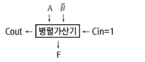
- 가산
- A를 전송
- A를 1증가
- 감산
(정답률: 40%)
30. 키보드(keyboard)의 키를 눌렀을 때 발생하는 인터럽트의 종류는?
- 외부적 인터럽트(external interrupt)
- 내부적 인터럽트(internal interrupt)
- 트랩(trap)
- 소프트웨어 인터럽트(software interrupt)
(정답률: 73%)
31. 다음 불 함수의 대수식이 옳지 않은 것은?
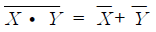
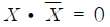
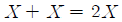
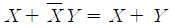
(정답률: 64%)
32. 연산한 결과를 기억장치로 보내기 전에 잠시 보관하는 레지스터는?
- Adder
- Accumulator
- Index Register
- Core Memory
(정답률: 59%)
33. 기억된 정보의 일부분을 이용하여 원하는 정보가 기억된 위치를 알아낸 후, 그 위치에서 나머지 정보에 접근하는 기억장치는?
- Cache memory
- Associative memory
- Virtual memory
- Main memory
(정답률: 56%)
34. 보조기억장치 중 접근(access) 특성이 다른 것은?
- Magnetic Tape
- Magnetic Disk
- USB 메모리
- Magnetic Drum
(정답률: 61%)
35. 컴퓨터 주기억장치의 용량이 128MB이면 address bus 는 몇 비트 필요한가?
- 24
- 25
- 26
- 27
(정답률: 51%)
36. 명령 형식 중에서 스택(stack)을 필요로 하는 것은?
- 3주소 명령어
- 2주소 명령어
- 1주소 명령어
- 0주소 명령어
(정답률: 66%)
37. 제어장치의 구현방법 중 마이크로프로그램 제어장치(Micro Program Control Unit)에 대한 설명으로 틀린 것은?
- 소프트웨어적인 방법으로 제어신호를 발생시킨다.
- 고정 배선 제어방식보다 속도가 빠르다.
- 한번 만들어진 명령어 세트를 쉽게 변경할 수 있다.
- 제작이 쉬우며 가격이 저렴하다.
(정답률: 39%)
38. 정보를 기억장치에 기억시키거나 읽어내는 명령이 시작한 직후로부터 실제로 정보를 기억 또는 읽기 시작 할 때까지 소요되는 시간은?
- seek time
- processing time
- access time
- idle time
(정답률: 58%)
39. 인출(FETCH) 사이클에서 사용되는 레지스터가 아닌 것은?
- PC(Program Counter)
- IR(Instruction Register)
- MAR(Memory Address Register)
- BR(Binary Register)
(정답률: 55%)
40. 인터럽트 요청에 대한 허락을 제어할 수 있는 레지스터는?
- Interrupt Mask Register
- Interrupt Priority Register
- Interrupt Request Register
- Interrupt Vector Register
(정답률: 39%)
3과목: 시스템분석설계
41. 표준 처리 패턴 중 파일을 읽어 들여서 데이터를 변형하여 입력파일과 다른 형식의 새로운 파일을 작성하는 처리는?
- distribution
- generate
- merge
- extract
(정답률: 53%)
42. 출력 정보 매체화 설계시 고려 사항으로 거리가 먼 것 은?
- 출력 형식
- 출력 장치
- 출력 항목 명칭(출력 정보명)
- 출력 방식
(정답률: 59%)
43. 파일 설계 단계 중 항목 명칭, 항목 속성, 키 항목, 항목 배열 순서, 전송 블록 크기, 정보량 등과 관계되는 것은?
- 파일 매체 검토
- 파일 특성 조사
- 파일 편성법 검토
- 파일 항목 검토
(정답률: 62%)
44. 시스템 오류 검사 기법 중 수신한 데이터를 송신 측으로 되돌려 보내 원래의 데이터와 비교하여 오류 여부를 검사하는 방법은?
- Balance Check
- Range Check
- Limit Check
- Echo Check
(정답률: 61%)
45. 자료 흐름도의 구성 요소가 아닌 것은?
- 자료흐름(Data Flow)
- 자료사전(Data Dictionary)
- 자료저장소(Data Store)
- 처리(Process)
(정답률: 55%)
46. LOC 기법에 의해 예측된 모듈의 라인수가 100000라인이고 개발에 투입되는 프로그래머의 수가 4명, 프로그래머의 월 평균 생산량이 1000라인이라고 할 때, 이 소프트웨어를 완성하기위해 개발에 필요한 기간은?
- 10개월
- 15개월
- 20개월
- 25개월
(정답률: 67%)
47. 파일 설계 순서가 옳게 나열된 것은?
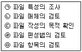
- (ㄹ)→(ㅁ)→(ㄴ)→(ㄷ)→(ㄱ)
- (ㄴ)→(ㅁ)→(ㄱ)→(ㄹ)→(ㄷ)
- (ㄷ)→(ㅁ)→(ㄱ)→(ㄴ)→(ㄹ)
- (ㄱ)→(ㅁ)→(ㄴ)→(ㄹ)→(ㄷ)
(정답률: 63%)
48. 다음 중 입, 출력 설계의 표준화에서 다루어지지 않는 사항은?
- 매체의 표준화
- 내용의 표준화
- 형식의 표준화
- 코드의 표준화
(정답률: 33%)
49. 소프트웨어의 일반적인 특성으로 거리가 먼 것은?
- 사용자의 요구나 환경변화에 적절히 변경할 수 있다.
- 사용에 의해 마모되거나 소멸된다.
- 하드웨어처럼 제작되지 않고 논리적인 절차에 맞게 개발된다.
- 일부 수정으로 소프트웨어 전체에 영향을 줄 수 있다.
(정답률: 70%)
50. 해싱함수 선택시 고려사항이 아닌 것은?
- Collision 의 최대화
- Overflow 의 최소화
- 버킷의 크기
- 키 변환 속도
(정답률: 63%)
51. 응집도의 종류 중 모듈 내부의 모든 기능요소들이 단지 단일 문제와 연관된 처리기능으로서 그 상위 모듈을 위해 수행하는 경우이며, 한 모듈 내의 모든 요소가 가진 본래의 기능을 정확히 수행하는지의 연관성을 의미하는 것은?
- Sequential cohesion
- Functional cohesion
- Procedural cohesion
- Temporal cohesion
(정답률: 52%)
52. 다음과 같이 주로 도서 분류코드에 사용되는 코드는?
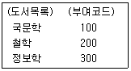
- 10진코드
- 순서코드
- 문자코드
- 분류코드
(정답률: 54%)
53. 문서화에 대한 설명으로 옳지 않은 것은?
- 시스템 개발 후에 유지보수가 용이하다.
- 복수 개발자에 의한 병행개발을 가능하게 한다.
- 정보를 축적할 수 있다.
- 문서화는 시스템이 모두 개발된 후에 일괄적으로 작업해야한다.
(정답률: 70%)
54. 프로세스 설계 시 고려사항으로 거리가 먼 것은?
- 처리 과정을 명확히 표현하여 신뢰성과 정확성을 확보한다.
- 가급적 분류 처리를 최대화 한다.
- 시스템의 상태 및 기능, 구성 요소 등을 종합적으로 표현한다.
- 신 시스템 및 기존 시스템 프로세스의 설계문제점 분석이 가능하도록 설계한다.
(정답률: 73%)
55. 흐름도의 종류 중 컴퓨터의 입력, 처리, 출력되는 하나의 처리 과정을 그림으로 표시한 것으로, 컴퓨터 운용 요원에게 처리 공정을 알려주기도 하지만 컴퓨터의 전체적인 논리구조 파악, 컴퓨터의 사용 시간의 계산 등에 사용되는 것은?
- 블록 차트
- 시스템 흐름도
- 프로세스 흐름도
- 프로그램 흐름도
(정답률: 47%)
56. 럼바우의 모델링 방법 중 시간 흐름에 따른 객체들과 객체들 사이의 제어 흐름, 상호 작용, 동작 순서 등을 표현하는 것으로, 시스템의 변화를 보여주는 객체 상태 다이어그램을 작성하는 모형에 해당하는 것은?
- 객체 모형
- 기능 모형
- 동적 모형
- 정적 모형
(정답률: 54%)
57. 시스템의 특성 중 사용자의 요구 조건을 만족시키기 위하여 시스템의 각 구성 요소들이 어떤 하나의 공통된 최종 목표에 도달하고자하는 특성을 의미하는 것은?
- 제어성
- 목적성
- 종합성
- 자동성
(정답률: 72%)
58. 코드 설계 순서로 옳은 것은?
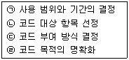
- (ㄹ)→(ㄱ)→(ㄴ)→(ㄷ)
- (ㄱ)→(ㄴ)→(ㄹ)→(ㄷ)
- (ㄹ)→(ㄴ)→(ㄱ)→(ㄷ)
- (ㄴ)→(ㄹ)→(ㄱ)→(ㄷ)
(정답률: 56%)
59. 모듈 작성 시 주의사항으로 옳지 않은 것은?
- 응집도를 최소화하고 결합도를 최대화한다.
- 적절한 크기로 작성한다.
- 보기 좋고 이해하기 쉽게 작성한다.
- 다른 곳에서도 적용이 가능하도록 표준화 한다.
(정답률: 71%)
60. 입력 설계 순서가 옳게 나열된 것은?
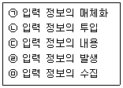
- (ㄱ)→(ㄴ)→(ㄷ)→(ㄹ)→(ㅁ)
- (ㄹ)→(ㅁ)→(ㄱ)→(ㄴ)→(ㄷ)
- (ㄱ)→(ㄹ)→(ㄴ)→(ㅁ)→(ㄷ)
- (ㄹ)→(ㄱ)→(ㅁ)→(ㄴ)→(ㄷ)
(정답률: 69%)
4과목: 운영체제
61. 최초 적합(first fit) 기법을 이용한다면 12K크기의 프로그램은 다음 그림 중 주기억장치의 어느 부분에 할당 하여야 하는가?(단, A, B, C, D 모두 비어있는 상태이다.)
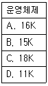
- A
- B
- C
- D
(정답률: 60%)
62. 임계 구역(Critical Section)에 대한 설명으로 옳지 않은 것은?
- 임계 구역에서 프로세스 수행은 가능한 빨리 끝내야 한다.
- 프로세스의 처리시간보다 페이지 교체에 소요되는 시간이 더 많아지는 현상을 의미한다.
- 임계 구역에서는 프로세스가 무한 루프에 빠지지 않도록 해야 한다.
- 임계 구역에서는 프로세스들이 하나씩 순차적으로 처리되어야 한다.
(정답률: 65%)
63. 구역성(locality)에 대한 설명으로 옳지 않은 것은?
- 시간구역성의 예로는 순환, 부프로그램, 스택 등이 있다.
- 구역성에는 시간구역성과 공간구역성이 있다.
- 어떤 프로세스를 효과적으로 실행하기 위해 주기억 장치에 유지되어야 하는 페이지들의 집합을 의미한다.
- 프로세서들은 기억장치내의 정보를 균일하게 액세스 하는 것이 아니라, 어느 한 순간에 특정 부분을 집중적으로 참조하는 경향이 있다.
(정답률: 52%)
64. 하나의 프로세스가 어느 정도의 프레임을 갖고 있지 않다면 페이지 부재가 계속해서 발생하여, 프로세스가 수행되는 시간보다 페이지 교체에 소비되는 시간이 더 많아지는 경우를 무엇이라 하는가?
- thrashing
- working set
- page fault
- demand page
(정답률: 61%)
65. 프로세스보다 더 작은 단위이며, 다중 프로그래밍을 지원하는 시스템 하에서 CPU에게 보내져 실행되는 또 다른 단위를 의미하는 것은?
- BLOCK
- THREAD
- SUSPEND
- RESUME
(정답률: 63%)
66. 디렉토리 구조 중 중앙에 마스터 파일 디렉토리가 있고 그 아래에 사용자별로 서로 다른 파일 디렉토리가 있는 계층 구조는?
- 1단계 디렉토리 구조
- 2단계 디렉토리 구조
- 트리 디렉토리 구조
- 비순환 그래프 디렉토리 구조
(정답률: 57%)
67. 운영체제의 역할로서 거리가 먼 것은?
- 기억 장치 관리
- 처리기 관리
- 입출력 장치 관리
- 원시 프로그램의 번역
(정답률: 70%)
68. 페이지 교체 기법 중 시간 오버헤드를 줄이는 기법으로서 참조 비트(Referenced bit)와 변형 비트(Modified bit)를 필요로 하는 방법은?
- FIFO
- LRU
- LFU
- NUR
(정답률: 59%)
69. 파일의 편성 방식 중 해쉬(Hash) 기법과 가장 연관이 많은 파일은?
- 순차파일
- 색인파일
- 직접파일
- 색인순차파일
(정답률: 31%)
70. 교착상태(Deadlock)의 필요조건에 해당하지 않는 것은?
- mutual exclusion
- circular wait
- preemption
- hold and wait
(정답률: 63%)
71. 모니터에 대한 설명으로 옳지 않은 것은?
- 한순간에 여러 프로세스가 모니터에 동시에 진입하여 자원을 공유할 수 있다.
- 공유 데이터와 이 데이터를 처리하는 프로시저로 구성된다.
- 모니터 외부의 프로세스는 모니터 내부의 데이터를 직접 액세스 할 수 없다.
- 모니터에서는 Wait 와 Signal 연산이 사용된다.
(정답률: 49%)
72. 파일 보호 기법 중 각 파일에 판독 암호와 기록 암호를 부여하여 제한된 사용자에게만 접근을 허용하는 기법은?
- 파일의 명명(Naming)
- 비밀번호(Password)
- 접근제어(Access control)
- 암호화(Cryptography)
(정답률: 55%)
73. 다음 설명이 의미하는 것은?
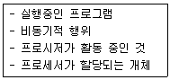
- WORKING SET
- MONITOR
- LOCKING
- PROCESS
(정답률: 75%)
74. SJF(Shortest Job First) 스케줄링에서 작업 도착 시간과 CPU 사용시간은 다음 표와 같다. 모든 작업들의 평균 대기시간은 얼마인가?
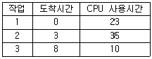
- 15
- 16
- 24
- 25
(정답률: 59%)
75. 다중 처리기 운영체제 구조 중 주종(Master/Slave) 처리기에 대한 설명으로 옳지 않은 것은?
- 주프로세서가 고장 날 경우에도 전체 시스템이 다운되지 않는다.
- 주프로세서는 입출력과 연산을 담당한다.
- 종프로세서는 입출력 발생시 주프로세서에게 서비스를 요청한다.
- 주프로세서가 입출력을 수행하므로 비대칭 구조를 갖는다.
(정답률: 66%)
76. 페이지 기법에 관한 설명으로 옳지 않은 것은?
- 페이지 크기가 작을수록 더 많은 페이지가 존재한다.
- 페이지 크기가 작을 경우 우수한 working set을 가질 수 있다.
- 페이지 크기가 클수록 더 큰 페이지 테이블공간이 필요하다.
- 페이지 크기가 클수록 참조되는 정보와는 무관한 많은 양의 정보가 주기억장치에 남게 된다.
(정답률: 45%)
77. UNIX 시스템의 쉘(shell)에 관한 설명으로 옳지 않은 것은?
- 사용자가 입력시킨 명령어 라인을 읽어 필요한 시스템 기능을 실행시키는 명령어 해석기이다.
- 쉘은 커널의 일부분으로 메모리에 상주하면서 사용자와 시스템 간의 대화를 가능케 해준다.
- 시스템과 사용자 간의 인터페이스를 제공한다.
- 공용 쉘이나 사용자 자신이 만들 쉘을 사용할 수 있다.
(정답률: 47%)
78. 운영체제의 성능 평가 기준 중 시스템을 사용할 필요가 있을 때 즉시 사용 가능한 정도를 의미하는 것은?
- Throughput
- Availability
- Turn Around Time
- Reliability
(정답률: 65%)
79. 하이퍼 큐브 구조에서 각 CPU가 6개의 연결점을 가질 경우 CPU의 총 개수는?
- 4
- 16
- 32
- 64
(정답률: 60%)
80. 4개의 페이지를 수용할 수 있는 주기억장치가 현재 완전히 비어 있으며, 어떤 프로세스가 다음과 같은 순서로 페이지번호를 요청했을 때 페이지 대체 정책으로 FIFO를 사용한다면 페이지 부재(Page-fault)의 발생 횟수는?
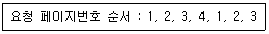
- 3회
- 4회
- 5회
- 6회
(정답률: 53%)
5과목: 정보통신개론
81. 다음 설명에 해당하는 통신 방식은?
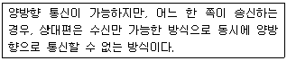
- Simplex 통신
- Half duplex 통신
- Full duplex 통신
- Multiple 통신
(정답률: 72%)
82. 다음 중 CATV 시스템의 주요 구성요소가 아닌 것은?
- 헤드엔드
- 교환장치
- 전송장치
- 가입자 단말장치
(정답률: 33%)
83. 다음이 설명하고 있는 다중화 방식은?
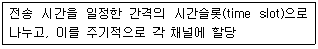
- 동기식 시분할 다중화
- 통계적 시분할 다중화
- 파장 분할 다중화
- 주파수 분할 다중화
(정답률: 67%)
84. 통신 프로토콜을 구성하는 기본 요소가 아닌 것은?
- Syntax
- Semantic
- Timing
- Speed
(정답률: 66%)
85. DTE와 DTE 간에 RS-232C에 의한 직접 접속(null modem)시 불필요한 것은?
- GND
- TxD
- RxD
- RTS
(정답률: 49%)
86. 다음 중 16-QAM에서 16은 무엇의 개수를 나타내는가?
- 위상
- 진폭
- 위상과 진폭의 조합
- 위상과 주파수의 조합
(정답률: 58%)
87. HDLC 프레임의 헤더에서 프레임을 송수신하는 스테이션을 구별하기 위해 사용되는 스테이션 식별자 필드는?
- 주소 필드
- 프레임 검사 순서
- 정보 필드
- 플래그
(정답률: 46%)
88. 여러 개의 터미널 신호를 하나의 통신회신을 통해 전송할 수 있도록 하는 장치는?
- 변복조장치
- 멀티플렉서
- 전자교환기
- 디멀티플렉서
(정답률: 62%)
89. 아날로그 시그널링을 위해서 아날로그나 디지털 데이터를 일정한 주파수를 가진 반송파에 싣는 장치는?
- 부호화기(Encoder)
- 복호화기(Decoder)
- 변조기(Modulator)
- 복조기(Demodulator)
(정답률: 40%)
90. OSI 7계층 중 코드변환, 암호화, 데이터 압축 등을 담당하는 계층은?
- 네트워크 계층
- 전송계층
- 세션계층
- 표현계층
(정답률: 54%)
91. 데이터 교환 방식 중 패킷 교환 방식에 대한 설명으로 틀린 것은?
- 대화형 데이터 통신에 적합하도록 개발된 교환 방식이다.
- 패킷 교환은 저장-전달 방식을 사용한다.
- 데이터 그램과 가상 회선 방식으로 구분된다.
- 데이터 그램 방식은 패킷이 전송되기 전에 논리적인 연결 설정이 이루어져야 한다.
(정답률: 47%)
92. LAN 으로 널리 이용되는 이더넷(Ethernet)에서 사용되는 방식은?
- CSMA/CD
- CDMA
- TOKEN-BUS
- DQDB
(정답률: 57%)
93. DTE에서 발생하는 NRZ-L 형태의 디지털신호를 다른 형태의 디지털 신호로 바꾸어 먼 거리까지 전송이 가능하도록 하는 것은?
- DCE
- RTS
- DSU
- CTS
(정답률: 52%)
94. 동기 전송에서 문자 위주 프레임 형식 중 프레임의 시작과 끝을 나타내는 것은?
- ETX
- SYN
- DLE
- STX
(정답률: 44%)
95. B-ISDN 의 표준 기술로서 데이터를 일정한 크기의 셀(cell)로 분할하여 전송하는 기술은?
- ADSL
- ATM
- VDSL
- HDSL
(정답률: 51%)
96. 데이터 통신 시 발생되는 오류를 검출하는 기법이 아닌 것은?
- 패리티 검사
- 블록 합 검사
- 허프만 부호화 검사
- 순환 중복 검사
(정답률: 51%)
97. 데이터 프레임을 연속적으로 전송해 나가다가 NAK를 수신하게 되면 오류가 발생한 프레임 이후에 전송된 모든 데이터 프레임을 재전송하는 ARQ 방식은?
- Go-back-N ARQ
- Selective-Repeat ARQ
- Stop and Wait ARQ
- Parity Check ARQ
(정답률: 67%)
98. 디지털 변조에서 디지털 데이터를 아날로그 신호로 변환시키는 키잉(Keying)방식에 해당하지 않는 것은?
- 스펙트럼 편이 키잉
- 진폭 편이 키잉
- 주파수 편이 키잉
- 위상 편이 키잉
(정답률: 59%)
99. 비동기식 전송방식에 대한 설명으로 틀린 것은?
- 각 전송문자 사이에는 휴지기간이 존재한다.
- 송수신 장치의 동기 형태는 비트 동기 방식이다.
- 전송속도가 주로 저속에서 운용된다.
- 각 전송문자의 앞뒤에 시작 및 정지 비트를 삽입한다.
(정답률: 36%)
100. 다음 중 정보통신시스템에서 데이터를 전송하는 절차로 맞는 것은?
- 링크확립→회로연결→메시지전달→회로절단→링크절단
- 회로연결→링크확립→메시지전달→회로절단→링크절단
- 회로연결→링크확립→메시지전달→링크절단→회로절단
- 링크확립→회로연결→메시지전달→링크절단→회로절단
(정답률: 59%)